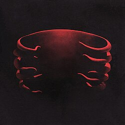
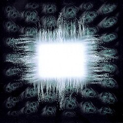
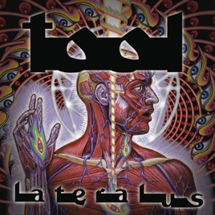

- 1993: Undertow
- Link per l'ascolto
- Genere: alternative metal, grunge

- 1996: Aenima
- Link per l'ascolto
- Genere: alternative metal, progressive metal

- 2001: Lateralus
- Link per l'ascolto
- Genere: progressive metal, art rock

- 2006: 10.000 Days
- Link per l'ascolto
- Genere: progressive metal, art rock, post rock

- 2019: Fear Inoculum
- Link per l'ascolto
- Genere: progressive metal, art rock